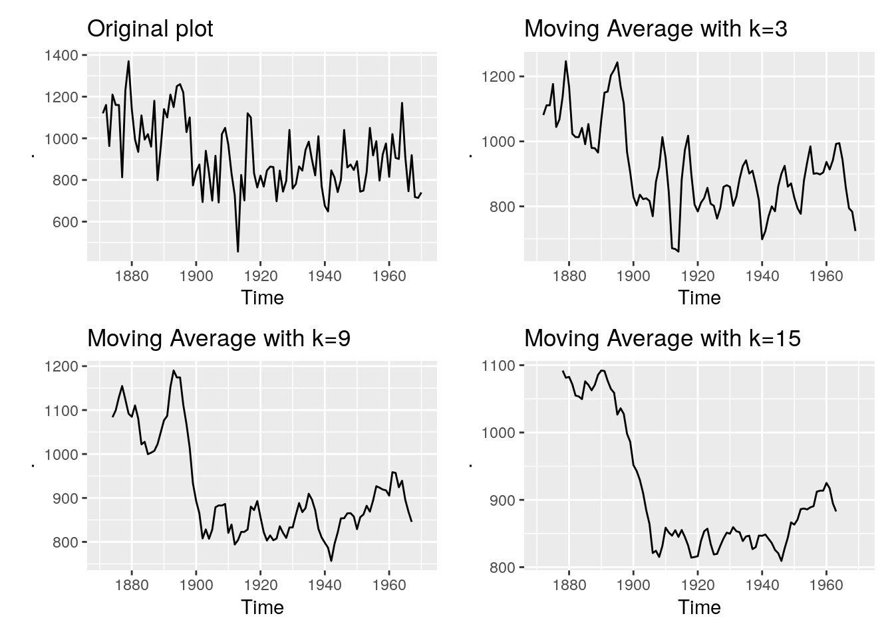
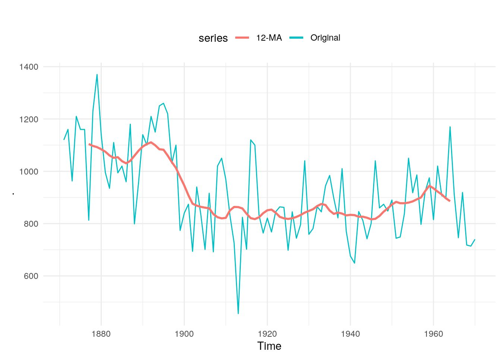
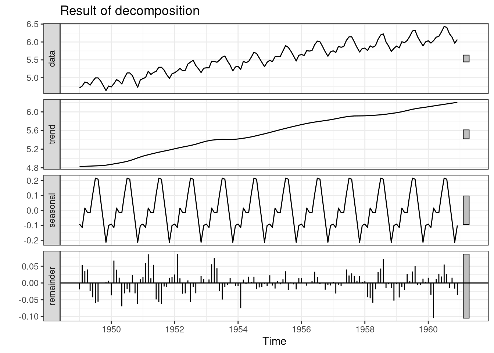
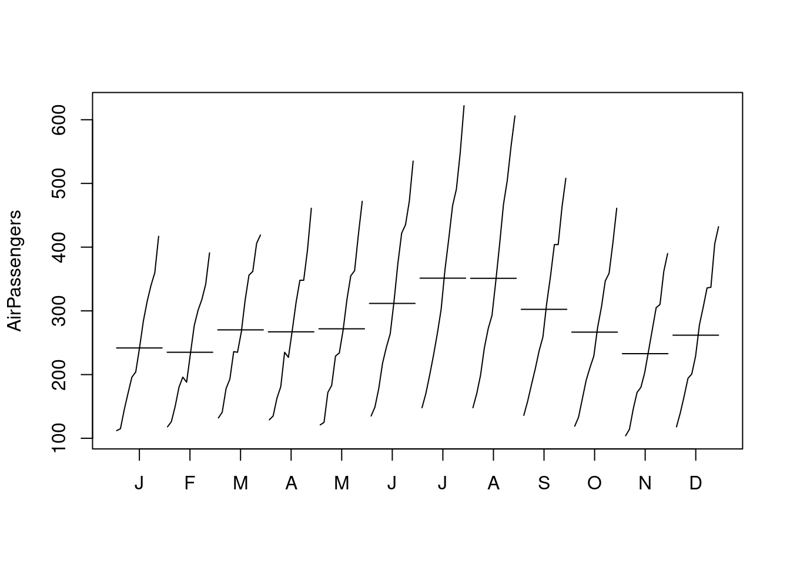
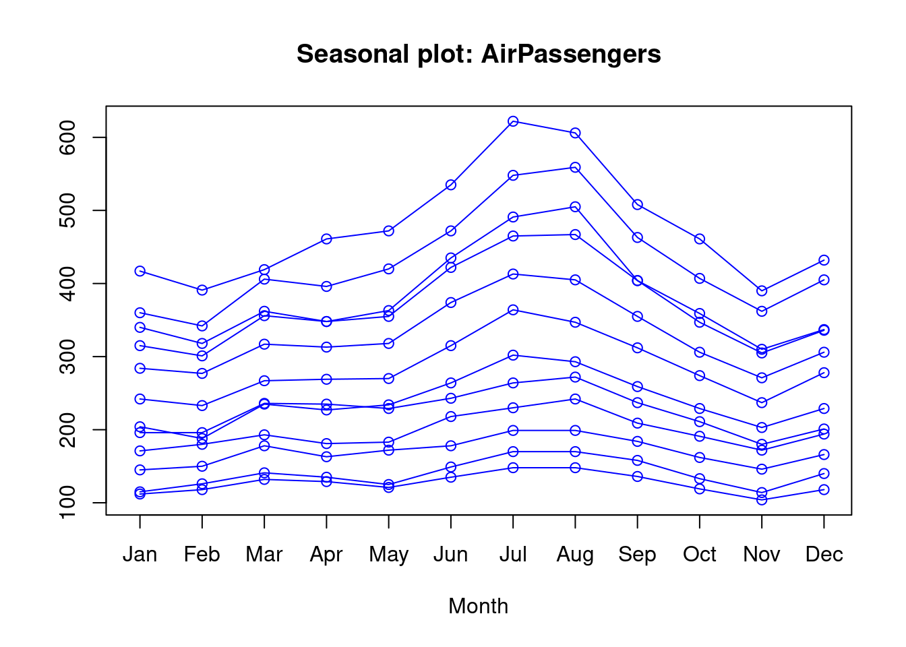
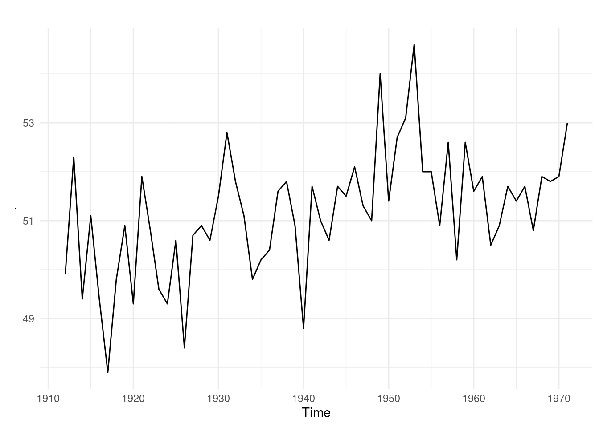

Định dạng dữ liệu chuỗi thời gian là một lại dữ liệu điển hình thường gặp trong thực tế. Khác so với các định dạng dữ liệu thông thường, dữ liệu chuỗi thời gian thông thường chỉ 1 giá trị nhưng trải dài theo thời gian.
Dữ liệu thường
x
y
z
1
2
4
2
4
5
3
2
9
4
6
2
5
8
1
Dữ liệu chuỗi thời gian
time
value
2022-01-01
2
2022-01-02
4
2022-01-03
2
2022-01-04
6
2022-01-05
9
Các kỹ thuật phân tích chuỗi thời gian tìm ra mối tương quan, ảnh hưởng giữa các biến quá khứ và ảnh hưởng của biến thời gian lên biến cần dự báo.
§
Khi phân tích dữ liệu, có hai khái niệm đều được gọi là dự báo khi được dịch sang tiếng Việt, đó là forcast và predict. Tuy nhiên, hai khái niệm này rất khác nhau.
Predict: Thường được dùng để chỉ việc dự báo xác suất xảy ra các sự kiện. Ví dụ, xác suất vỡ nợ, xác suất khách hàng churn,…
Forecast: Thường dùng trong việc dự báo chuỗi thời gian. Ví dụ, dựa vào lịch sử biến động của tổng khách hàng uống cafe theo tuần, ta có thể dự báo được số lượng khách hàng uống cafe của 1 tuần tới, hai tuần tới,…
Trong những phần trước, chúng ta đã bàn nhiều về các kỹ thuật predict, trong phần này, ta sẽ bàn thêm về nhóm forecast, về các cấu phần và cách thức dự báo đối với chuỗi thời gian. Do đó, trong phần này, khi nói về dự báo, chúng ta đang bàn về vấn đề forecast.
§
Phân biệt dự báo, mục tiêu và kế hoạch
Dự báo: là quá trình sử dụng các thông tin hiện hữu đưa ra các nhận định chính xác nhất có thể có trong tương lai trong một khoảng thời gian xác định về một chỉ số nào đó.
Mục tiêu: là thứ mà cá nhân, tổ chức mong muốn đạt được trong một khoảng thời gian xác định trong tương lai. Thường thì mục tiêu được đặt mà không quan tâm đến bất kỳ đến việc dự báo nào cả. Ví dụ, mục tiêu tăng trưởng của doanh nghiệp thường là năm sau cao gấp đôi năm trước trong khi dự báo chỉ có thể tăng được 30%.
Kế hoạch: Là phản ứng của tổ chức, cá nhân đối với dự báo và mục tiêu. Việc lập kế hoạch đòi hỏi nhiều hành động cụ thể để điều hướng dự báo sát sát với mục tiêu (hoặc vượt mục tiêu)
Xét về yếu tố thời gian, việc dự báo có thể chia thành dự báo ngắn hạn, trung hạn và dài hạn.
Ứng dụng của dự báo chuỗi thời gian có thể có các ứng dụng sau:
Dự báo doanh số bán hàng
Dự báo số lượng tiền rút ATM
Dự báo volume của call center
Dự báo lượng khách du lịch hàng năm
Việc nắm vững các kỹ thuật dự báo chuỗi thời gian sẽ hỗ trợ hoạt động ra quyết định của doanh nghiệp được tốt hơn.
§
Các điểm khi dự báo
Khi dự báo, có hai điểm quan trọng chúng ta phải trả lời trước khi đi vào dự báo thực tế.
Thứ nhất, ta cần dự báo điều gì? Dự báo với từng sản phẩm hay với cả nhóm sản phẩm? Dự báo doanh số bán hàng của từng cửa hàng hay của toàn hệ thống?
Thứ hai, yếu tố thời gian xét trong vấn đề dự báo này là gì? Ta cần dự báo trong bao lâu? Tần xuất như thế nào? Ví dụ, dư báo doanh số bán hàng mỗi tháng/tuần 1 lần trong 1 năm tới?
Việc trả lời các câu hỏi trên là rất quan trọng, giúp ta tránh đi chệch hương bởi lẽ dự báo chuỗi thời gian sẽ có xu hướng đúng trên tập số lớn và dữ liệu tổng hợp. Khi đi vào từng sản phẩm, đơn vị nhỏ sẽ thiếu độ chính xác. Ví dụ, dự báo doanh số bán hàng của cả 200 chi nhánh sẽ chính xác hơn khi dự báo từng chi nhánh con.
Lưu ý
Khi phân tích dữ liệu, ta cần phải tìm hiểu các đơn vị nghiệp vụ sẽ sử dụng kết quả dự báo như thế nào, để tránh việc bỏ quá nhiều thời gian và công sức dự báo nhưng không ai sử dụng.
42.1 Thành phần của chuỗi thời gian
Trong bất cứ chuỗi thời gian nào, cũng có 3 thành phần sau.
Xu hướng (trend) thể hiện chiều hướng tăng hay giảm dài hạn của chuỗi thời gian
Mùa vụ (seasonal) thể hiện sự biến đổi của chuỗi thời gian theo chu kỳ biết trước. Ví dụ, vào cuối tuần, khách hàng có xu hướng đi ăn nhà hàng nhiều hơn.
Chu kỳ kinh doanh (cyclic) thể hiện xu hướng biến đổi dài hạn của chuỗi thời gian, thường ít nhất hai năm. Chu kỳ kinh doanh khác với yếu tố mùa vụ ở chỗ, chu kỳ biến đổi của yếu tố mùa vụ thường là đã được biết trước và mang tính ngắn hạn. Do đó, yếu tố chu kỳ kinh doanh chỉ được đưa vào phân tích khi dữ liệu phân tích đủ lớn.
Khi phân tích chuỗi thời gian tập trung vào 2 câu hỏi:
Cái gì đã xảy ra
Cái gì sẽ xảy ra, với độ tin cậy bao nhiêu phần trăm
Phân tích chuỗi thời gian sử dụng rất nhiều trong việc dự báo tăng trưởng, lên kế hoạch. Mô hình này dùng rất nhiều trong Macroeconomics, Finance…
Lưu ý
Để phân tích chuỗi thời gian, R lưu object dưới dạng ts (time series)
Khi lưu trữ trong R, chuỗi thời gian được lưu dưới dạng ts như sau.
#Tạo chuỗi thời giansales <-c(round(rnorm(48,10,2),0))#Tạo object tstsales <-ts(sales, start =c(2003,1), frequency =12)tsales
Jan Feb Mar Apr May Jun Jul Aug Sep Oct Nov Dec
2003 9 6 12 7 11 9 12 10 14 9 9 12
2004 10 12 10 8 9 8 6 11 12 8 8 7
2005 13 9 13 10 7 12 11 7 8 11 11 10
2006 8 8 6 13 9 11 12 10 7 8 13 7
Hàm ts quy định dữ liệu tối thiểu là ngày và có các frequency được quy định như sau.
Data
Frequency
Annual
1
Quarterly
4
Monthly
12
Weekly
52
Để hiển thị biểu đồ với time series theo phong cách của ggplot2, ta có thể dùng package ggfortify.
Khi phân tích, sẽ có rất nhiều các yếu tố gây nhiễu như mùa vụ, quan sát bất thường… Để xử lý vấn đề này và nhìn rõ xu hướng, ta có thể làm trơn dữ liệu - hay nói cách khác làm giảm ảnh hưởng gây nhiễu.
Centered Moving Average là kỹ thuật làm trơn để giảm đi các yếu tố gây nhiễu trong chuỗi thời gian.
\[S_t=\frac{Y_{t-q}+...+Y_t+...+Y_{t+q}}{2q+1}\]
\(S_t\) được gọi là giá trị làm trơn (smoothed value) tại thời điểm t, \(k=2q+1\) là số quan sát được lấy giá trị trung bình. k thường là giá trị lẻ.
p1 <- Nile %>%autoplot() +labs(title ="Original plot")p2 <-ma(Nile, 3) %>%autoplot() +labs(title ="Moving Average with k=3")p3 <-ma(Nile, 7) %>%autoplot() +labs(title ="Moving Average with k=9")p4 <-ma(Nile, 15) %>%autoplot() +labs(title ="Moving Average with k=15")p1 + p2 + p3 + p4

Lưu ý: Các đường smoothing có thể xây dựng trên cùng 1 biểu đồ và sử dụng package forecast và ggfortify như sau.
Nile %>%autoplot(series ="Original") +autolayer(ma(Nile, 12), series ="12-MA", size =1, color ="darkred") +theme_minimal() +theme(legend.position ="top")

42.3 Phân rã các thành phần chuỗi thời gian
Bất kỳ mô hình times series nào cũng được cấu thành bởi ba yếu tố
Trend: Xu hướng phát triển theo thời gian
Seasonal: Yếu tố mùa vụ
Irregular component (error): Các yếu tố gây nhiễu
Mô hình chuỗi thời gian cơ bản có hai dạng:
Mô hình hiệu ứng cộng (Additive) - chuỗi thời gian do tổng các thành phần cấu thành tạo nên.
\[Y_t=Trend_t + Seasonal_t + Irregular_t\]
Mô hình hiệu ứng nhân (Multiplicative) - chuỗi thời gian do tích các thành phần cấu tạo nên.
Do đó, để phân tích chuỗi thời gian, ta cũng cần bóc tách chuỗi thời gian thành 3 yếu tố như trên bằng hàm stl (Seasonal Decomposition of Time Series by Loess). Cấu trúc của câu lệnh như sau.
s.window: kiểm soát tốc độ thay đổi của yếu tố thời vụ (seasonal) ảnh hưởng đên chuối thời gian thế nào. Nếu \(s.window="period"\) thì yếu tố thời vụ sẽ giống hệt nhau qua các năm.
t.window: kiểm soát tốc độ của yếu tố xu hướng (trend) thay đổi theo thời gian thế nào
#Phân tích thành phần tsfit <-stl(lAirPassengers, s.window ="period")autoplot(fit) +theme_bw() +labs(title ="Result of decomposition")

#Quay lại dữ liệu gốcfit$time.series %>%head(7)
seasonal trend remainder
Jan 1949 -0.09164042 4.829389 -0.01924936
Feb 1949 -0.11402828 4.830368 0.05434477
Mar 1949 0.01586585 4.831348 0.03558845
Apr 1949 -0.01402759 4.833377 0.04046325
May 1949 -0.01502478 4.835406 -0.02459053
Jun 1949 0.10978976 4.838166 -0.04268143
Jul 1949 0.21640041 4.840927 -0.06011517
Lưu ý: Nhìn vào kết quả của bảng trên, ta có thể có các nhận định sau:
Tháng một, yếu tố thời vụ khiến khách hàng giảm 9% (seasonal=-0.091)
Tháng bảy, yếu tố thời vụ khiến khách hàng tăng 21% (seasonal = 0.216)
fit$time.series %>% exp %>%head(7)
seasonal trend remainder
Jan 1949 0.9124332 125.1344 0.9809347
Feb 1949 0.8922327 125.2571 1.0558486
Mar 1949 1.0159924 125.3798 1.0362293
Apr 1949 0.9860703 125.6345 1.0412930
May 1949 0.9850875 125.8897 0.9757094
Jun 1949 1.1160434 126.2377 0.9582166
Jul 1949 1.2415994 126.5866 0.9416561
#Phân tích xu hướng theo tháng và seasonalmonthplot(AirPassengers)

seasonplot(AirPassengers, col ="blue", type ="o")

42.4 Exponential Forecasting Model
Exponential model là nhóm mô hình đơn giản nhưng có thể đưa ra kết quả dự báo khá chính xác chuỗi thời gian trong ngắn hạn. Nhóm mô hình này có 3 dạng:
Single Exponential Model (Simple Exponential Model): Áp dụng với chuỗi thời gian không có trend rõ ràng
Double Exponential Model (Hold Exponential Model): Áp dụng với chuỗi có xu hướng nhưng không có yếu tố mùa vụ rõ ràng
Triple Exponential Model (Hold-Winters Exponential Model): Áp dụng với chuỗi có cả xu hướng và mùa vụ
42.4.1 Single Exponential Model
Mô hình này được áp dụng khi không có xu hướng rõ ràng trong chuỗi thời gian. Quan sát tại thời điểm \(t\) được xác định dựa trên ảnh hưởng của các quan sát trước đó. Ví dụ chuỗi thời gian loại này như sau.
nhtemp %>%autoplot() +theme_minimal()

\[Y_t=level + irregular_t\]
Dự báo giá trị của \(Y_{t+1}\) (1-step ahead forecast) là:
\[Y_{t+1}=c_0Y_t + c_1Y_{t-1}+c_2Y_{t-2}+...\]
với \(c_i=\alpha(1-\alpha)^i\), \(\sum c_i=1\), \(i=0,1,2...\), \(\alpha\in[0,1]\)
đo lường độ ảnh hưởng của các biến trước đó đến giá trị dự báo \(Y_{t+1}\). Do đó, \(\alpha\) có đặc điểm sau:
càng gần 1, các biến càng gần có trọng số càng lớn
càng gần 0, các biến càng xa có trọng số càng lớn
library(forecast)fit <-ets(y = nhtemp, model ="ANN")fit
\(\alpha=0.182\) cho thấy rất nhiều quan sát được tính đến trong mô hình.
Độ chính xác của mô hình được tính bằng các chỉ số thông dụng sau
Chỉ số
Viết tắt
Cách tính
Mean error
ME
\(mean(\epsilon_t)\)
Root mean squared error
RMSE
\(sqrt(mean(\epsilon_t^2))\)
Mean absolute error
MAE
\(mean(\epsilon_t)\)
Mean percentage error
MPE
\(mean(100*\epsilon_t/Y_t)\)
Mean absolute percentage error
MAPE
\(mean( 100*\epsilon_t/Y_t)\)
42.4.2 Hold & Holt-Winters exponential smoothing
Tương tự như simple exponential smoothing, Hold và Hold-Winters tính đến các yếu tố xu hướng và mùa vụ tại thời điểm hiện tại. Các yếu tố này bị ảnh hưởng bởi các yếu tố xu hướng và mùa vụ tương ứng trong quá khứ.
Hold exponential smoothing
\[Y_t=level + slope*t + irregular_t\]
\(\alpha\): Độ ảnh hưởng của các biến y trong quá khứ đến biến hiện tại
\(\beta\): Độ ảnh hưởng của biến xu hướng trong quá khứ đến hiện tại
Hold-Winters exponential smoothing
\[Y_t=level + slope*t + s_t + irregular_t\]
\(\alpha\): Độ ảnh hưởng của các biến \(y\) trong quá khứ đến biến hiện tại
\(\beta\): Độ ảnh hưởng của biến xu hướng trong quá khứ đến hiện tại
\(\gamma\): Độ ảnh hường của biến chu kỳ đến hiện tại
Lưu ý: Các ảnh hưởng của slope và chu kỳ (và ) đến giá trị hiện tại được tính theo công thức giống như alpha
library(forecast)library(dplyr)fit <-ets(log(AirPassengers), model ="AAA")fit